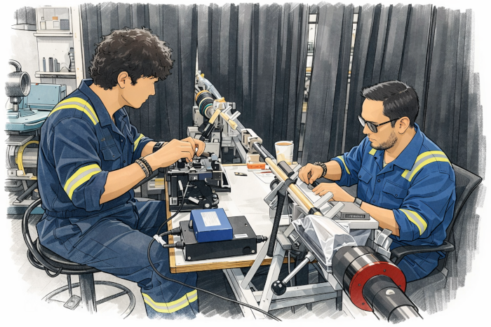

Expert installation, maintenance, and repair services for submarine fiber-optic cable systems, supporting the global networks that keep the world connected.
Specialized in submarine fiber-optic cable jointing, we deliver certified splicing, termination, and repair services for undersea telecommunications networks. With expertise in UJ, UQJ, and MJ technologies, we support installation and maintenance operations with precision, reliability, and technical excellence.

Founded by a telecommunications professional with more than 14 years of experience in submarine fiber-optic networks, Deep Link Solutions brings extensive expertise in the installation, maintenance, and repair of critical undersea infrastructure.
Backed by a track record of supporting major international cable projects, we are committed to delivering precision, reliability, and technical excellence. Our experience, combined with a proactive approach to problem solving and collaboration, enables us to provide trusted support for the networks that connect the world.
Every project is underpinned by decades of field experience, rigorous standards, and a commitment to delivering results.
Years of successful involvement in major international submarine cable projects across multiple ocean regions.
Highly skilled personnel with specialist knowledge in fiber-optic splicing, underwater systems, and cable protection techniques.
We understand the critical nature of submarine cable infrastructure and provide dependable, timely support when it matters most.
Experience working across diverse maritime environments and jurisdictions, with the flexibility to deploy worldwide.
Whether you need installation, maintenance, repair, or expert consulting, we're ready to help. Reach out to discuss your requirements.